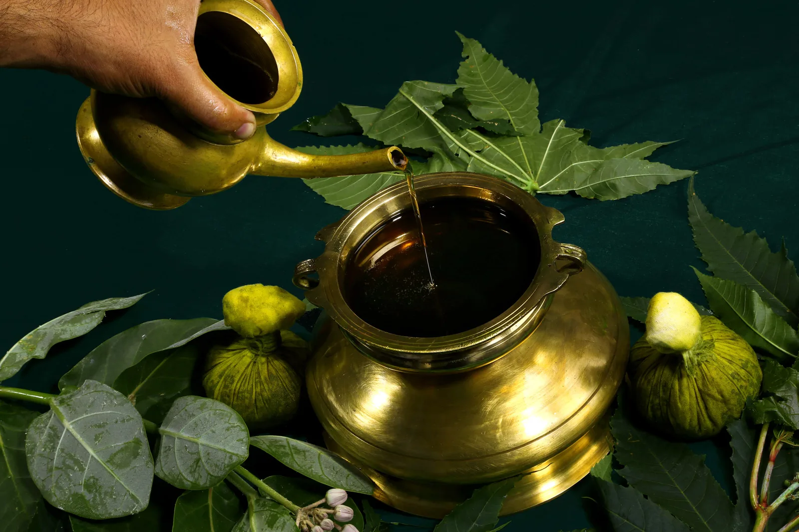

Ājurvēdas retrīts
Pančakarma — Pilna ājurvēdas pieredze
14.12. – 28.12.2026. · Kerala
14 dienu individuāli pielāgota Pančakarmas programma vienā no labākajām ājurvēdas klīnikām pasaulē. Dziļa ķermeņa attīrīšana, satsangi, svētvietu apmeklējumi un atpūta pie Arābijas jūras.
- Individuāla Pančakarmas programma
- 3,5 – 5 stundas terapijas dienā
- Satsangi un garīgās prakses
- Ājurvēdisks uzturs

Svētceļojums
Svētceļojums uz Dienvidindiju
05.01. – 16.01.2027. · Kerala & Tamilnāda
11 dienu ceļojums pa Keralas un Tamilnādas svētvietām. Divja Desam tempļi, Rameshwaram, Kanjakumari, Meenakshi templis, Kathakali izrāde un laivu brauciens Kovalamā.
- 15+ Divja Desam tempļu
- Padmanabhaswamy un Guruvayur
- Rameshwaram un Kanjakumari
- Kathakali izrāde un laivu brauciens